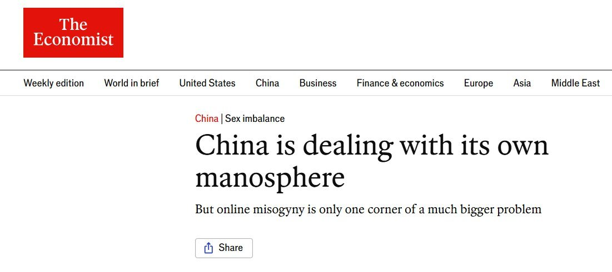

评论区伟大的董志民信徒们，你们就继续厌女，继续互害吧。
把拳头指向女人、指向孩子、指向同性恋、指向残疾人，指向一切弱势群体。
共匪不用压榨任何弱势群体，因为他们知道：只要给女人一点特权，中国男人就会对女人挥拳；只要给同性恋一点优待，中国男人就会对同性恋喊打喊杀。
他们只需要压榨唯一的“强势群体”——国男基本盘，就够了。
还得是共匪会搞群众斗争啊。

把拳头指向女人、指向孩子、指向同性恋、指向残疾人，指向一切弱势群体。
共匪不用压榨任何弱势群体，因为他们知道：只要给女人一点特权，中国男人就会对女人挥拳；只要给同性恋一点优待，中国男人就会对同性恋喊打喊杀。
他们只需要压榨唯一的“强势群体”——国男基本盘，就够了。
还得是共匪会搞群众斗争啊。

《经济学人》：中国男性的愤怒，正被引向女性
7月12日，《经济学人》刊文分析中国不断扩大的“男性主义网络”。
文章指出，独生子女政策造成严重性别失衡，低收入男性又同时承受房价、彩礼、就业和阶层固化压力。
但在严格审查之下，批评制度风险太高，攻击女性反而成了更安全的泄愤出口。 https://t.co/eZ17ySFJST
7月12日，《经济学人》刊文分析中国不断扩大的“男性主义网络”。
文章指出，独生子女政策造成严重性别失衡，低收入男性又同时承受房价、彩礼、就业和阶层固化压力。
但在严格审查之下，批评制度风险太高，攻击女性反而成了更安全的泄愤出口。 https://t.co/eZ17ySFJST